X-men: A saga da Fenix
O Beyonder reúne heróis e vilões...
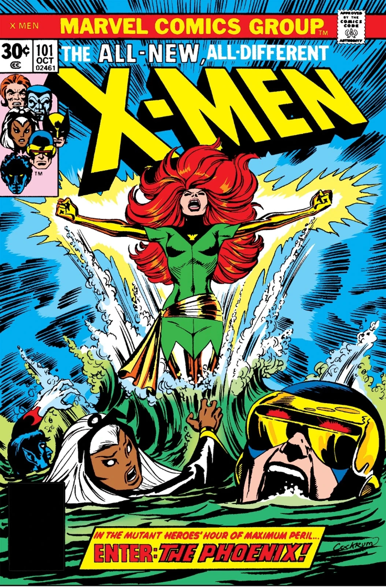
X-men: A saga da Fenix Negra
Thanos reúne as Joias do Infinito e apaga metade da vida do universo, forçando heróis cósmicos e terrestres a se unirem.
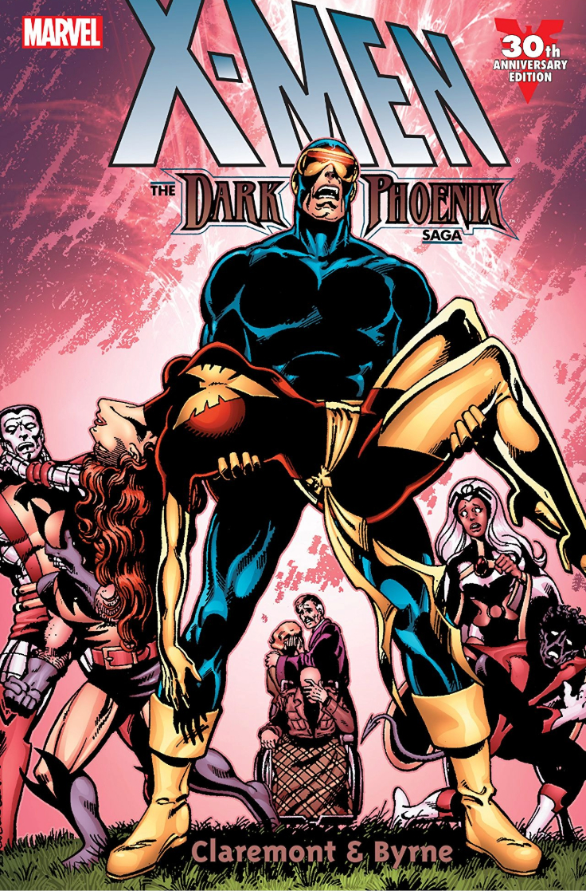
Guerras Secretas
O Beyonder reúne heróis e vilões...
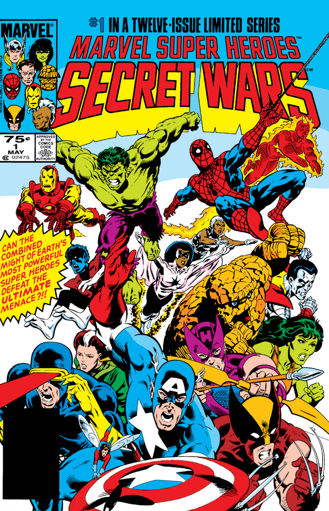
A Manopla do Infinito
Thanos reúne as Joias do Infinito e apaga metade da vida do universo, forçando heróis cósmicos e terrestres a se unirem.
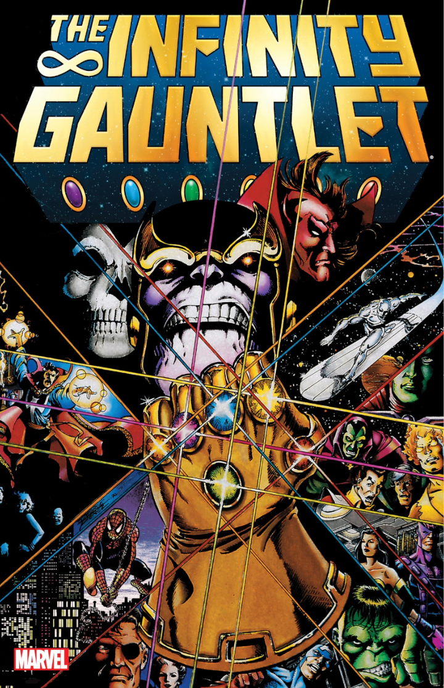
Vingadores: A queda
Um ataque inesperado a mansão dos vingadores traz a morte de diversos membros da equipe, agora os herois remanescentes se juntam e tentam descobrir o causador deste desastre que resultará no fim da equipe.
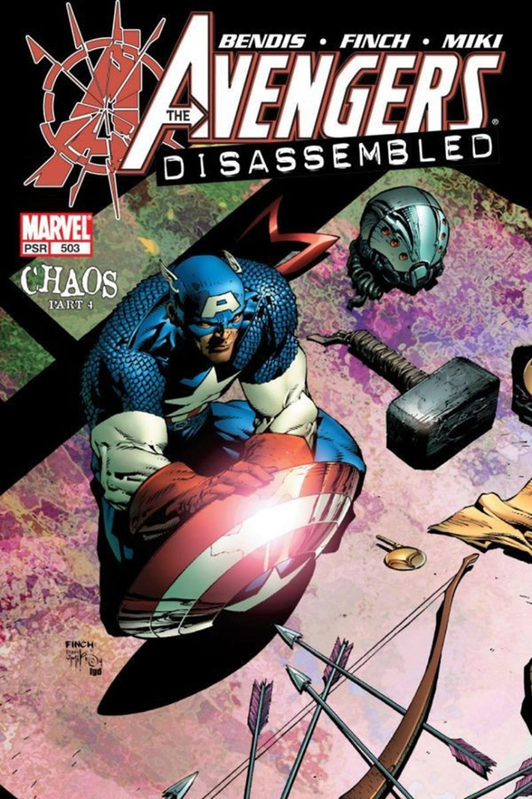
Dinastia M
Thanos reúne as Joias do Infinito e apaga metade da vida do universo, forçando heróis cósmicos e terrestres a se unirem.
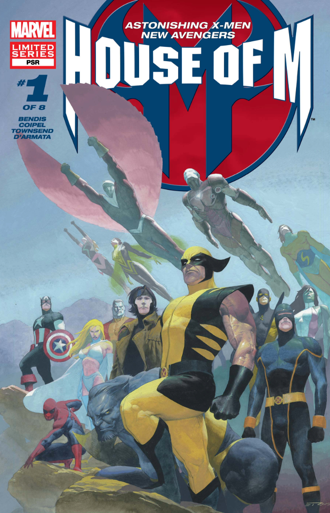
Guerra Civil
Após um conflito de super herois em uma escola que deixa centenas de mortos, o governo americano decide criar uma lei que obriga os herois a se registrarem e a agir sob as ordens do governo, isso dá inicio ao conflito entre Capitão America e Homem de Ferro que resultaria no fim dos Vingadores como conhecemos.
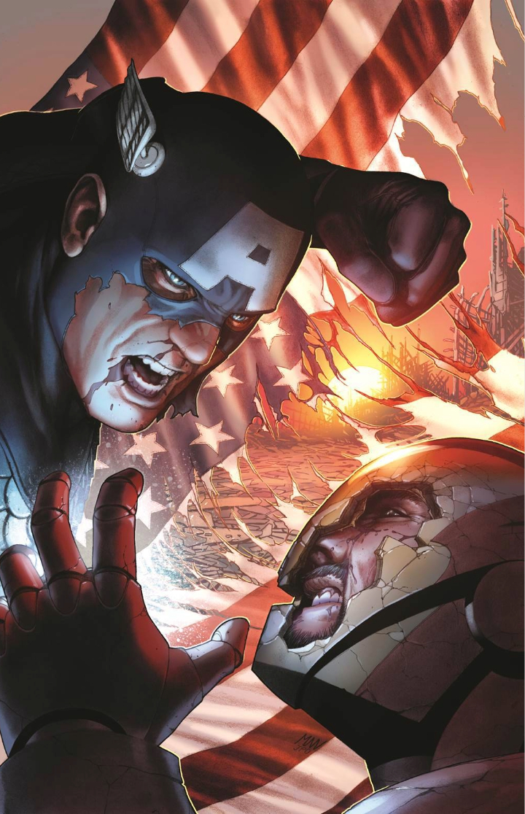
Hulk contra o mundo
Após ser lançado ao espaço, Hulk retorna a terra com sua armada para se vingar dos herois que o trairam e o jogaram no planeta Saakar.
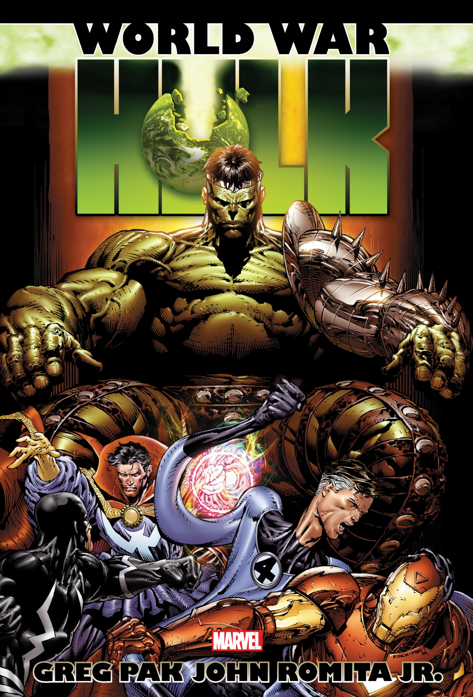
Invasão Secreta
Homem de ferro e os Illuminati fazem a descoberta de que a Mulher-Aranha era na realidade uma alienigena Skrull disfarçada, começa então a saga que pos a identidade de todos os herois e vilões em duvida.
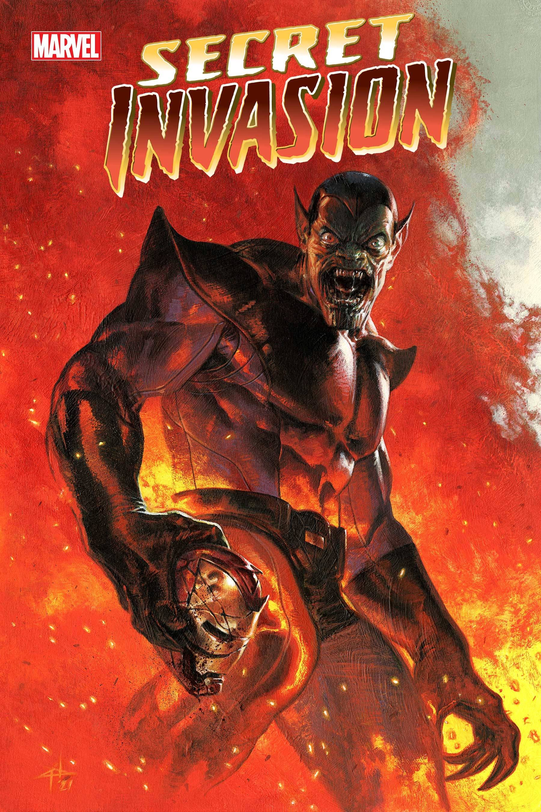
Reinado Sombrio
Após Norman Osborn liderar uma equipe de Anti-herois para repelir o ataque skrull, a liderança do Homem de Ferro é posta em duvida, assim Norman o antigo Duende Verde se torna o novo diretor da SHIELD
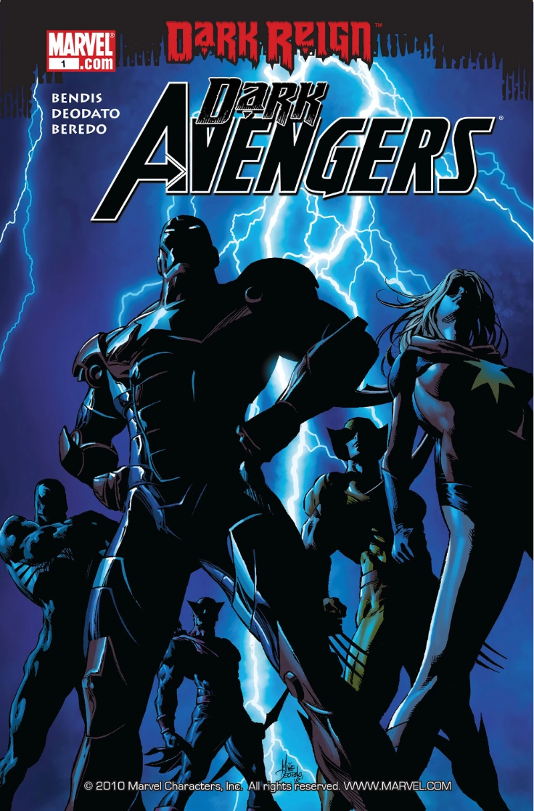
O Cerco
Norman Osborn e Loki lançam um cerco ao que restou de Asgard, que agora habita a terra, os Vingadores se reunem mais uma vez para impedir que Loki tome o controle de Asgard.
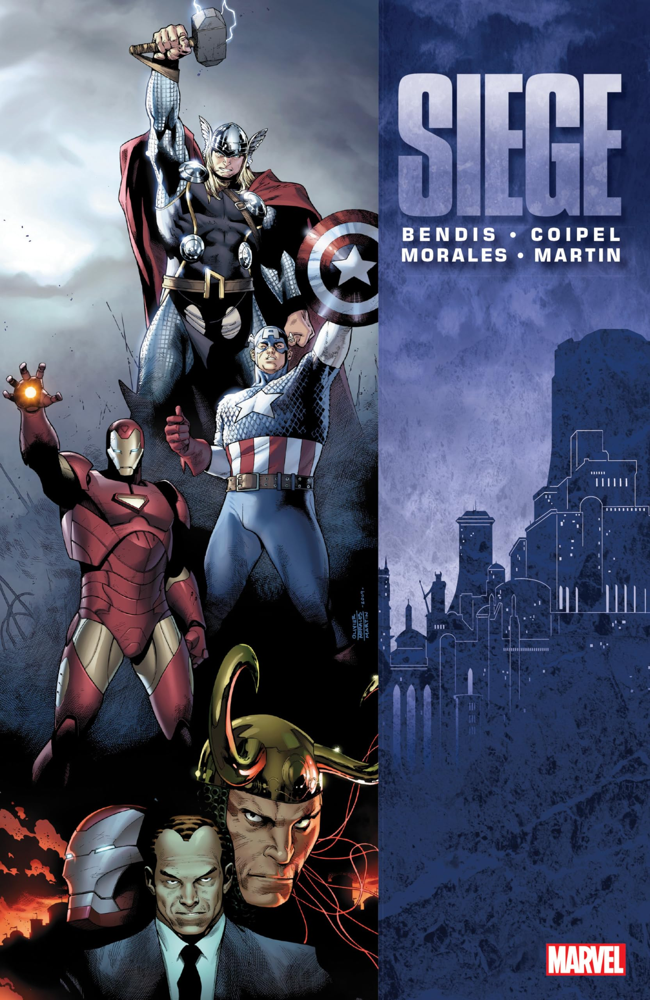
Vingadores vs X-men
A força fenix está devolta
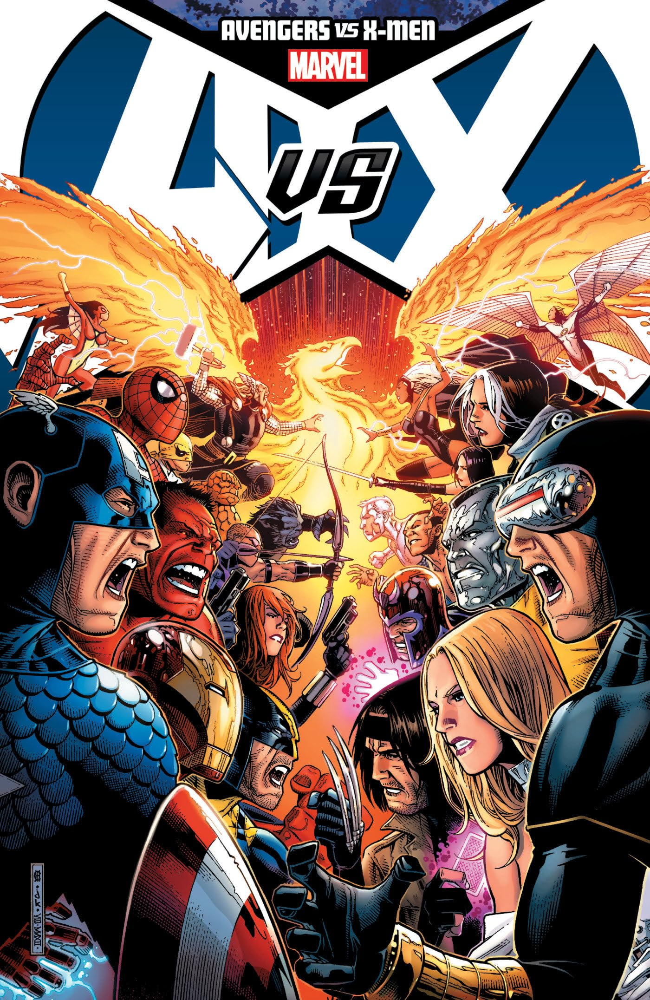
Vingadores/X-men EIXO
A força fenix está devolta
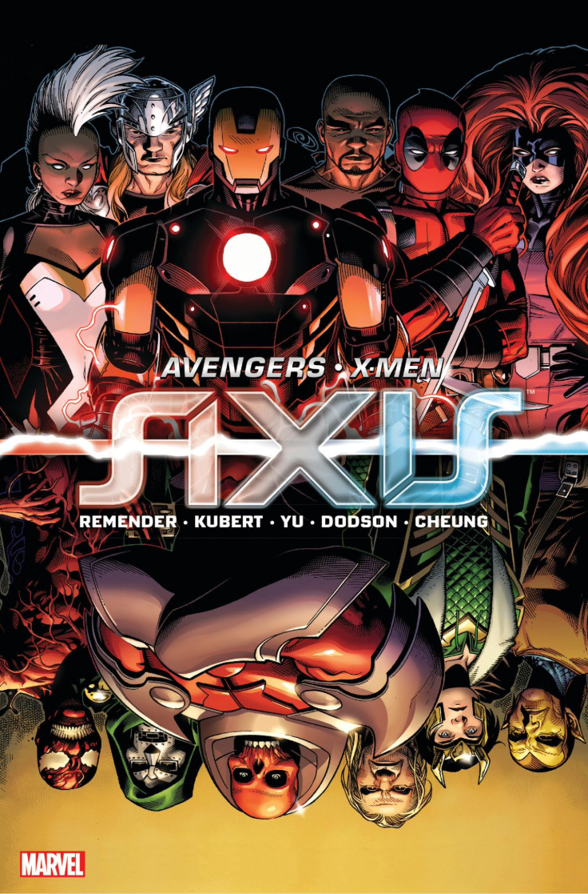
Guerras Secretas
A força fenix está devolta
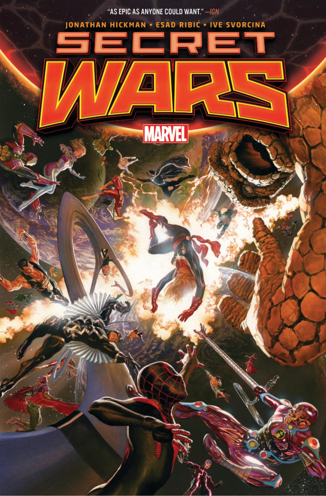